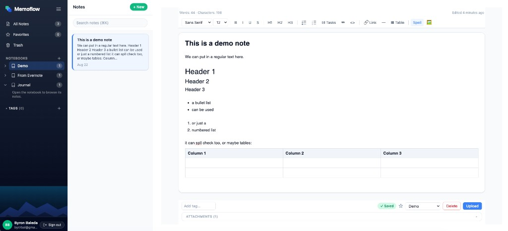

MemoFlow
A production notes app with Google sign-in, Tiptap rich-text editing, notebooks and tags, full-text search, file attachments, and offline sync with explicit conflict resolution — one Cloudflare Worker serves the React SPA and JSON API, with D1 as canonical state and R2 for attachment bytes.
Problem
Quick notes often end up scattered across chat threads, email, and half-finished docs. You need one place to capture rich text, organize by notebook or tag, find old ideas fast, and attach files — without giving up privacy or reliability when the network drops. Building that as a real web product means server-enforced ownership, safe rich-text storage, and sync that does not silently overwrite newer edits.
Solution
MemoFlow is a calm three-column notes workspace: a sidebar for All
Notes, Favorites, Trash, notebooks, and tags; a searchable note
list; and a Tiptap editor with headings, lists, tasks, tables,
links, and inline images from uploaded attachments. Notes autosave
with optimistic concurrency — stale versions return
409 instead of overwriting. Full-text search runs in
SQLite FTS5 on the Worker, ranked by relevance with server-generated
snippets. An IndexedDB read-through cache makes lists and documents
feel instant; an offline queue replays edits when connectivity
returns and surfaces conflicts for the user to resolve.
Architecture
MemoFlow is built as a modern web app you open in the browser — no install required. You sign in with Google; your account and notes live in the cloud, but the app is designed so each person only sees their own data. The writing experience uses a full rich-text editor (headings, lists, tables, images, and file attachments), and edits save automatically as you work.
Behind the scenes, everything runs on Cloudflare’s global network instead of a traditional server you have to manage. That means one reliable website address serves both the app and the backend, notes and metadata sit in a managed database, and uploaded files are stored separately so the app stays fast even with attachments. The app also keeps a local copy on your device so notes open quickly and you can keep working when the connection drops — when you’re back online, changes sync up, and if two edits clash, you choose which version to keep instead of losing work silently.
In your browser
Secure backend
Cloud storage
Hosting · quality
Technologies
- React
- TypeScript
- Vite
- Tailwind CSS
- Tiptap
- Cloudflare Workers
- Cloudflare D1
- SQLite FTS5
- Cloudflare R2
- Google OAuth
- IndexedDB
- Vitest
- Wrangler
Screenshot
Notebooks sidebar, note list, and rich-text editor with formatting toolbar, table, tags, and attachments — signed in as Byron Baleda on the production app.

Live app
Open the production deployment — sign in with Google to use your own notebooks and notes. There is no public demo account; authentication is handled entirely through Google OAuth.
Need something like this?
If this is close to what you need, let’s talk about building a version tailored to your needs.